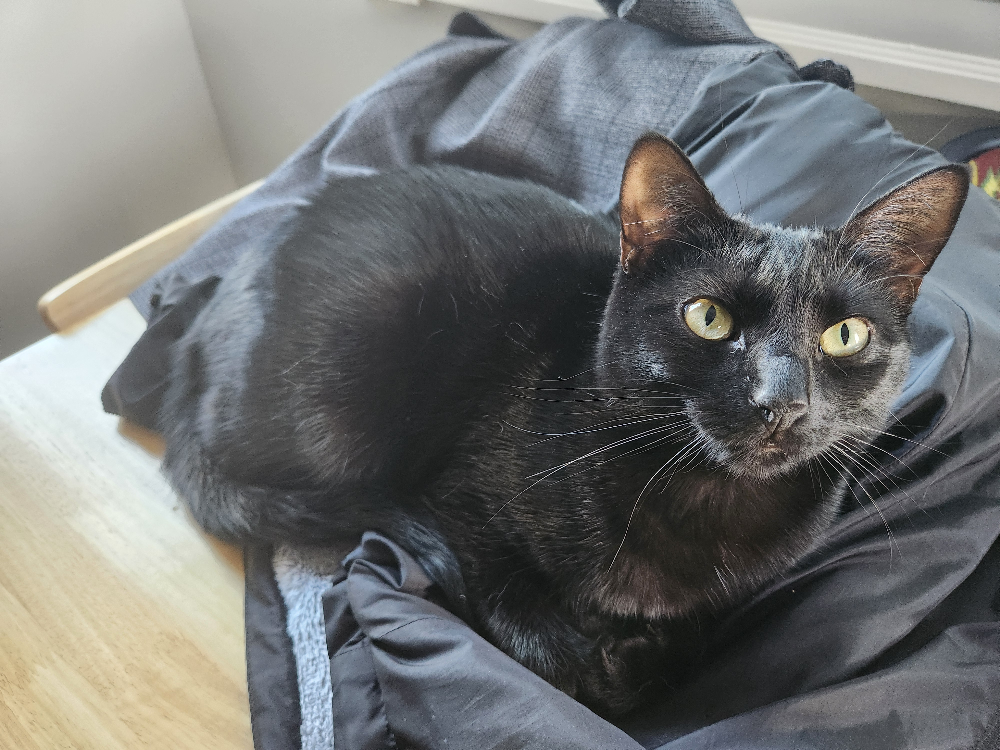
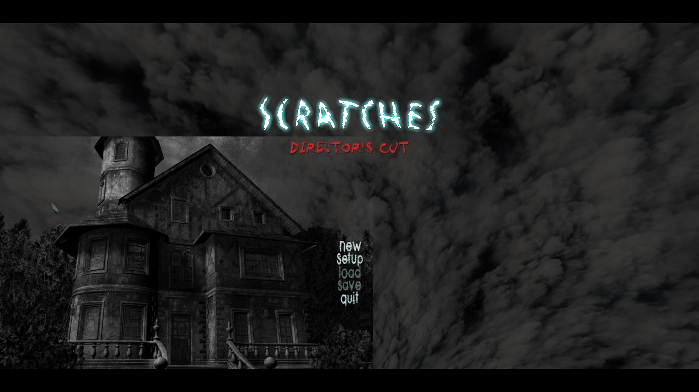
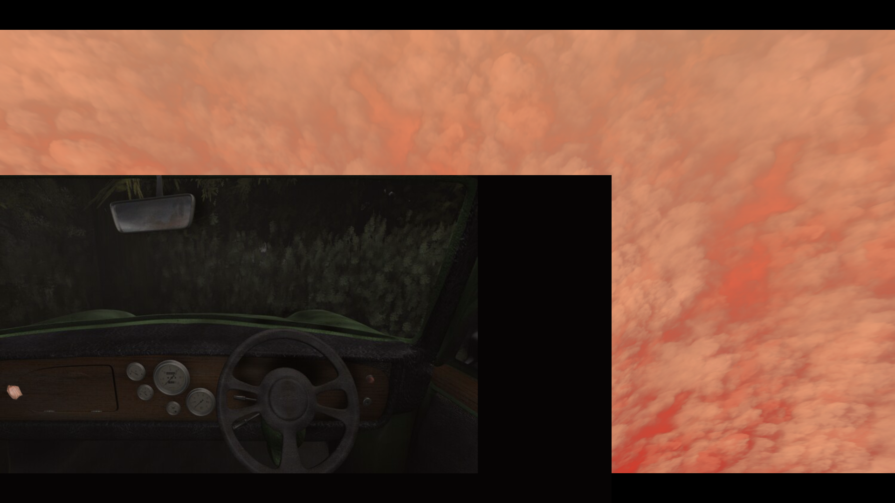
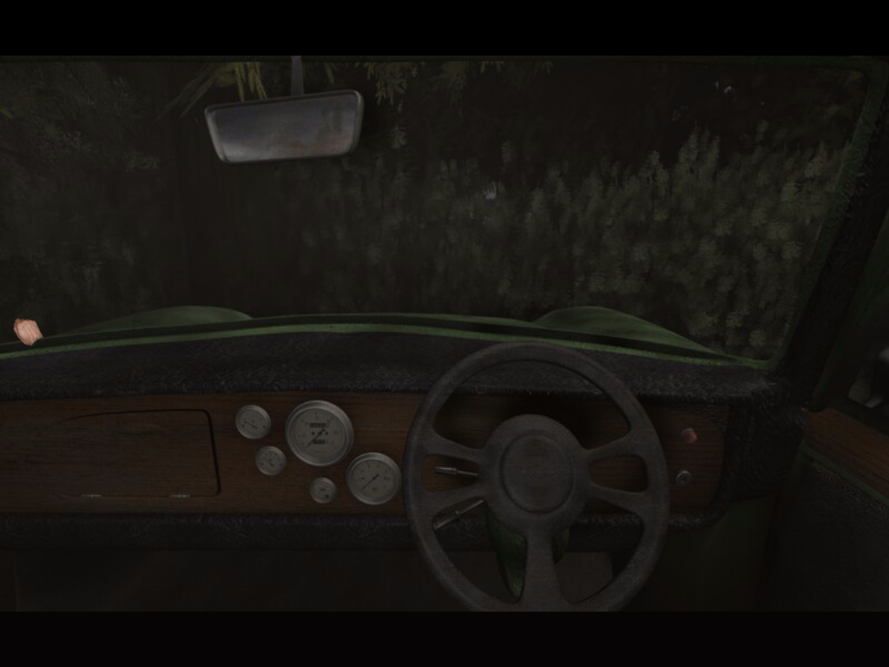
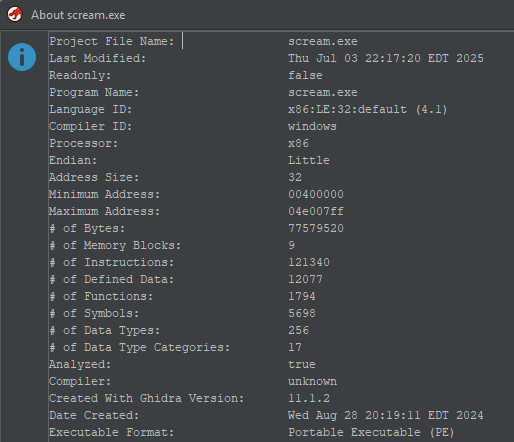
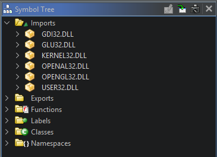
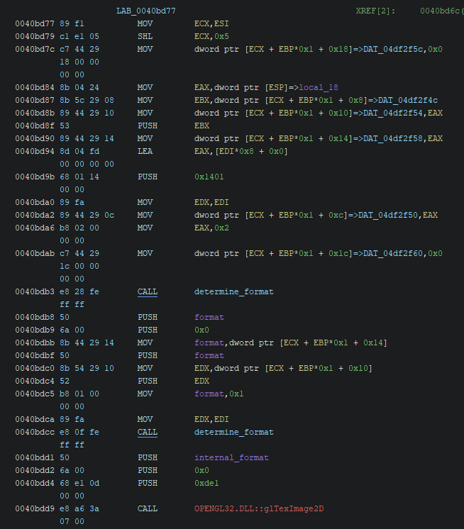
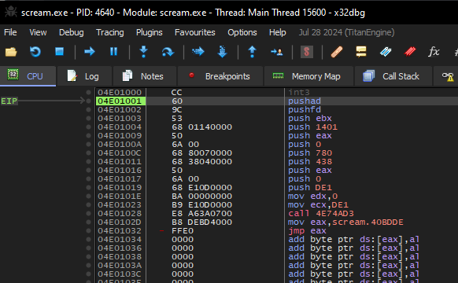
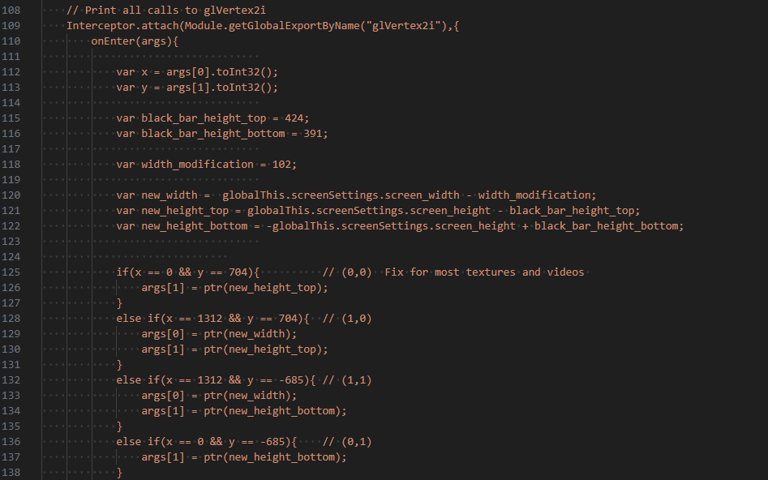
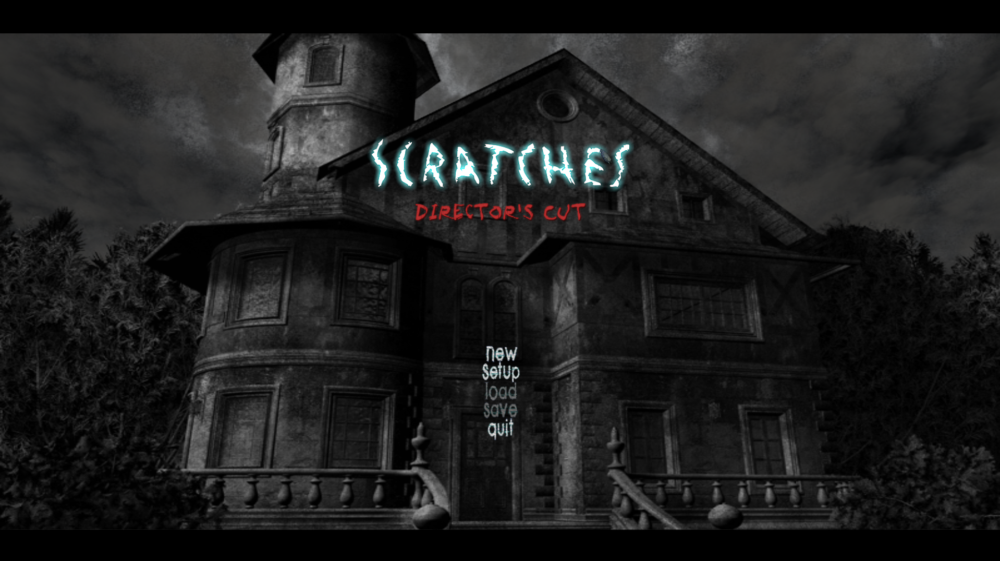

In the first part of this write-up, I covered the modification and dumping of resource data from the proprietary SCream resource file format. Part 1 can be read here. In this section, I will cover a minimal fix for the widescreen resolution bug present in Scratches through the use of Frida. Frida is a binary instrumentation toolkit and also the name of my cat :)
The widescreen resolution bug is apparent when you launch the game in a 16:9 aspect ratio like 1920x1080 or 2560x1440. The resolution can be set in the scream.cfg file. Some textures and images are only loaded to a smaller section of the window. In this screenshot of the main menu, the still image of the house is drawn incorrectly while the moving clouds and menu items are drawn correctly.
Beyond the main menu, the issue appears when the item menu is opened or the character moves to a 2D area. This is a screenshot of the bug seen from a 2D area in 1920x1080:
This is the same area when the resolution is set to 1024x768:
Most of the 3D resources render correctly in the game. This includes sections where you are able to look around and move, but not all cutscenes.
Upscaling Images
With little knowledge of how games render textures and graphics, my initial thought was to try upscaling the images stored in the scratches.res file. The idea was if the image data was too small or in the wrong aspect ratio, the program may not attempt to stretch it to the rest of the window. The test for this was simple. I ran the dump_srf.py that I covered in part 1 to get the image of the house, back-menu.tga, from the main menu. I opened the image in GIMP and upscaled it to 1920x1080. Using the same method to modify the scratches.res file as in part 1, I added the upscaled image to the end of the file. I then updated the file offset of back-menu.tga in the metadata section to point to the new data at the end. This however did not seem to have any effect on the issue.
scream.exe Reversing
By ruling out the image data in the scratches.res file, I knew the issue was somewhere in the scream.exe file. Opening scream.exe in Ghidra shows that it is an x86 32-bit PE file.
The Symbol Tree window shows that OPENGL32.DLL is imported meaning that OpenGL is probably how the graphics are handled.
OpenGL 2.1 was released in 2006 so this code was written for that version or earlier. Skimming the old documentation and comparing it to modern OpenGL suggested that the functions in question would be similar enough. I dug through the OpenGL functions used in the binary and came up with a list of suspects:
- glTexImage2D
- glOrtho
- glViewport
- glVertex2i
- glTexCoord2f
- glGenTextures
- glBindTexture
- glLoadIdentity
- glHint
Code Cave Redirect via Binary Patching
My second attempt at a fix was to patch the binary to change how the arguments to the glTexImage2D function were set. The function is only referenced once in the code. This is the disassembled function that calls glTexImage2D:
Fast call is the calling convention being used meaning that function parameters are placed in registers and pushed to the stack in reverse order. The function in the screenshot above did not have enough space to directly patch in the new arguments to glTexImage2D. To workaround this, I used PE-bear to create a new code section in the PE file. I wrote some assembly code to call the glTexImage2D function with updated parameters and placed it in the new section. To get the program to run this new code section, I patched the binary to redirect to the new code section instead of calling glTexImage2d at address 0040bdd9. I confirmed the new code was being run in x32dbg, but this attempt also did not seem to have any effect on the issue.
Frida Hooks
To speed up troubleshooting, I pivoted to Frida. Frida allowed me to test different function parameters quickly without patching the binary for every test. I spun up a Frida script, log_gl.py, to log the function parameters for each OpenGL function call as the game runs. Looking through the output of function parameters, glVertex2i function calls seemed to often have unusually small values given the size of the window. To test this theory, I wrote another script, hook_glvertex2i.py, that instruments and modifies the arguments to each glVertex2i call. After a bit of educated trial and error, I was able to create conditional statements for the values that are incorrect and modify them to the correct values. The updated resolution values also needed to account for the horizontal black bars at the top and bottom of the screen.
While this solution is not the cleanest, it worked as a proof of concept. The textures and images render to the correct size and location on the screen.
This script fixes most of the visual bugs that I found in the game. However, there are a few issues still present with the cursor location and with the item menu. The original purpose of this project was to learn about Windows PE files. I feel comfortable leaving the project where it is at this point, but if anyone who still plays this game is interested in a more complete fix, I would be happy to continue the work.